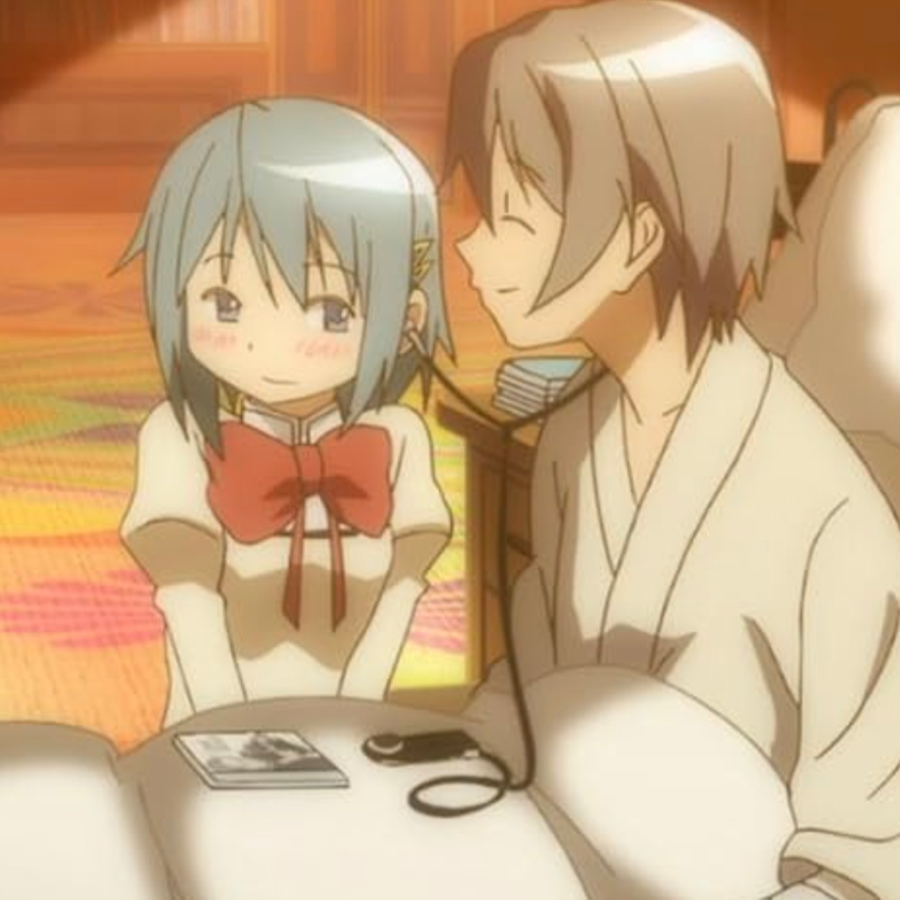
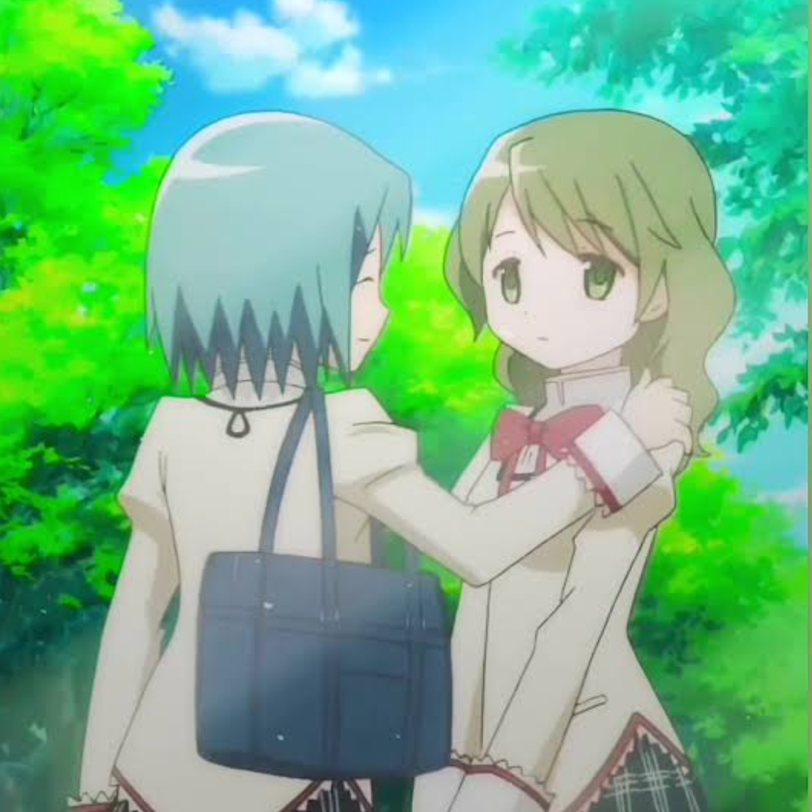

Sobre

Este site tem o objetivo de citar coisas interessantes sobre Sayaka Miki, personagem de Madoka Magica.
Informações Gerais
Sayaka Miki, também autoproclamada como "A Garota Mágica da Justiça", é uma das personagens principais da animação japonesa Puela Magi-Madoka Magica (2011), também tendo aparição em Madoka Magica Rebellion (2013) como uma das personagen sprincipais, e em Magia Record (2017) como personágem secundária.Sayaka também tem aparição em inúmeros mangás oficiais de Madoka Magica, como Puela Magi, The Diferent History, Rebellion, etc.

Aparência
Sayaka Miki é uma adolescente de estatura baixa/mediana, de pele clara, com olhos azuis escuros, e cabelo curto, indo até os ombros, de tom azul claro.
Como estudante, sua vestimenta é um uniforme feminino do fundamental, se baseando em uma blusa manga comprida bege com detalhes brancos e vermelhos (com um laço vermelho na região do peito), saia preta plissada com linhas orizontais e verticais brancas, meias até a canela de tom azul escuro, e sapatos marrons. Há dois clipes dourados básicos em seu cabelo, logo atrás de sua franja e orelha.
Em sua transformação de Garota Mágica, Sayaka usa um peitoral azul tomara-que-caia com detalhes dourados e babados brancos, espartilho branco com botões e detalhes em dourado, luvas azuis escuras até os ombros por dentro de luvas brancas até o pulso, saia plissada azul escuro com uma fita branca na parte de baixo, cinto azul escuro com a fivela dourada, meias 7/8 brancas com detalhes em azul e dourado, botas curtas azul claro com um pequeno salto, e uma longa capa branca alinhada com o colar branco e dourado em seu pescoço . Em seu cabelo há um clipe dourado em formato de 2f's, e em seu umbigo há uma pedra azul em fomato de lua crescente, sendo essa sua Soul Gem.
 Estudante
Estudante
 Garota Mágica
Garota Mágica
Personalidade
Sayaka é apresentada como uma garota enérgica e animada, que costuma fazer brincadeiras bobas e provocações com suas amigas, em especial Madoka Kaname, e que geralmente leva as coisas de forma casual e amena. Apesar de sua postura "cool" na maior parte o tempo, Sayaka é uma menina responsável e bastante determinada a defener seus amigos, coelgas e entes queridos, tendo assim um senso de justiça bem forte e consolidado, e desprezando quem faz mal a quem ela ama.
No entanto, com o passar dos episódios, e graças a certas descobertas traumáticas, Sayaka se torna mais cética e abatida, ficando até agressiva com suas amigas mais próximas e se recusando a aceitar ajuda e piedade de qualquer um, até finalmente sucumbir ao próprio desespero e se tornar Oktavia von Seckendorff.
Armas e Habilidades
Sayaka Miki porta uma espada de médio porte com a bainha preta e dourada, e uma lâmina fina prateada com detalhes em azul. Sayaka tem a capacidade de invocar quantas espadas quiser, usando as para combate comum, ou as arremessando. É subentendido que Sayaka possa ser ambidestra, dado que em certas cenas, a garota porta uma espada em cada mão. Além da habilidade com lâminas, Sayaka, graças ao seu desejo de curar alguém, desenvolveu o poder de cura super rápida e resistência acima da média (em comparação a de outras garotas mágicas) podendo receber golpes fatais e continuar se movendo. Um exemplo disso é em Magia Record, onde sua mão é decepada durante uma luta, e depois realojada perfeitamente em poucos segundos.
Ela também controla a bruxa e tal.
História
Na história de Puella Magi Madoka Magica, Sayaka Miki, assim como Madoka Kaname, é uma adolescente comum do 8° ano que se torna uma das garotas persuadidas por Kyuubey a se tornarem Garotas Mágicas. Na história do anime, Sayaka é a sucessora de Mami Tomoe para proteger Mitakihara das Bruxas, até ironicamente acabar transformando-se em uma delas, sendo derrotada por Kyoko Sakura. Após Madokami reescrever o universo no último episódio, Sayaka é liberta do desespero e desaparece em paz, assim como todas as Garotas Mágicas que sucumbiram ao desespero anteriormente. No filme Rebellion, Sayaka é uma enviada de Madokami para o labirinto de bruxa que Homura criou, e se responsabiliza por vigiar a garota e assegurar que tudo se resolva quando Homura lembrar quem realmente é. Nessa realidade, Sayaka tem a capacidade de controlar sua própria Bruxa, a Octavia, e permanece com as lembranças de todas as outras timelines que participou. No fim do filme, após Homura roubar os poderes de Madoka reescrever a realidade, Sayaka confronta a outra garota, que agora se tornou um Demônio. Com isso, Homura apaga as memórias de Sayaka e a força a viver em sua ilusão junto com todas as outras.
Relacionamentos principais
-
Kyosuke Kamijō (Interesse amoroso)
Kyosuke é o mlk chato q a Sayaka é afim e vende a alma pra salvar, oq é uma merda pq ele é tão pão com ovo q ela combinaria mais com qualquer outra pessoa no universo, além de q né, ele decidiu pegar a bestie da coitada sem nem dar satisfação. Ele é o exemplo de como mulher q gosta de homem se fode na vida pq pqp tá foda. Pelo menos no fim a Sayaka supera ele e começa a arrastar asa pra Kyoko, q pelo menos é uma gado do caralho e faz tudo pela crush, msm sendo uma orfã pobre fudida. Kyosaya canon.
 -
Madoka Kaname (Aliada/Amiga)
Madoka e Sayaka são melhores amigas de infância, possuindo um grande vínculo desde então. Sayaka costuma proteger Madoka sempre que possível e demonstra forte apreço e possessividade com sua amiga, tanto que constantemente faz piadas de que Madoka é "só dela" e "sua futura noiva". Entretanto, do decorrer da história do anime, com Sayaka entrando numa espiral de sofrimento e traumas, a garota acaba por maltratar Madoka e agir de modo cruel com a amiga, sendo esse fato um dos percursores para Sayaka sucumbir ao desespero no fim, banhada pela culpa. Em Rebellion, Madoka e Sayaka voltam a ter uma relação amigável.
-
Mami Tomoe (Aliada/Amiga)
Sayaka admira profundamente Mami desde que se conheceram, quando Mami a salvou de uma bruxa, e tem o objetivo de ser uma Garota Mágica tão boa quanto ela. Quando Mami morreu, Sayaka se sentiu impotente e amarga consigo mesma, um dos motivos pelo qual decidiu fazer o contrato de Garota Mágica pouco tempo depois. Em Rebellion, ambas mantêm uma relação amistosa como parte do Holy Quintet.

-
Kyuubey/Incubator (Amigo/Inimigo)
Kyuubey é o ser enigmático responsável por conceder desejos e transformar garotas em Garotas Mágicas.A relação de Sayaka e Kyuubey começa amistosa, com Kyuubey a auxiliando sobre o conceito de Garota Mágica, e a persuadindo a fazer um contrato, coisa que acontece após a morte de Mami Tomoe. Após isso, a relação de ambos continua de cooperação por um tempo, até Sayaka finalmente descobrir sobre os pontos negativos de ser uma Garota Mágica e tudo que Kyuubey esconde dela. Após a revelação de que Sayaka vendeu sua alma, Kyuubey começa a revelar suas verdadeiras cores e sua natureza apática, quebrando assim o vínculo anterior com Sayaka, que começa a se ressentir de sua escolha e de ter confiado em Kyuubey em primeiro lugar. No fim, Sayaka se torna uma Bruxa, sendo exatamente o que Kyuubey queria desde o início.


-
Kyoko Sakura (Rival/aliada/amiga)
Kyoko e Sayaka se conheceram de modo durante uma batalha contra um familiar, e tiveram uma relação conturbada desde então, em que ambas se desprezavam completamente. Entretanto, com o passar dos acontecimentos do anime, as duas garotas começam a se entender de um modo menos negativo, com Kyoko em especial nutrindo um grande desejo de ajudar e salvar Sayaka em seu pior momento, até mesmo se sacrificando para isso. No filme Rebellion, Kyoko e Sayaka nutrem uma rivalidade amigável e um vínculo afetivo mais forte e positivo, podendo ser subentendido como romântico em certas oportunidades, mas não é algo 100% confirmado. No filme, Sayaka confessa à Kyoko que o motivo de querer voltar à vida foi por sentir falta da outra garota, e se arrepender de tê-la deixado para trás.


-
Homura Akemi (Rival)
Sayaka desconfia de Homura desde que a conheceu na escola, e esse sentimento ficou cada vez mais forte, principalmente após ela e Madoka descobrirem que Homura é uma Garota Mágica de índole duvidosa. A relação de Sayaka e Homura só piora quando Sayaka se torna Garota Mágica, com Homura até mesmo tentando assassinar a outra garota em certo momento por não aceitar cooperação. Entretanto, Homura ainda se preocupa com Sayaka de sua própria maneira, pois a conhece de outras linhas do tempo. Em Rebellion, ambas têm uma relação amena e pacífica até Homura descobrir sobre a Bruxa que prende todas em Mitakihara, o que gera conflito com Sayaka, que não quer que Homura tente algo contra a Bruxa.
-
Hitomi Shizuki (Amiga)
Hitomi é uma amiga próxima de Sayaka, que em certo momento acaba por confessar estar apaixonada por Kyosuke, assim como Sayaka, o que gera certo conflito na relação e no psicológico de Sayaka, pois tal acontecimento foi um dos pilares para a ruína da garota, que se tornou invejosa e amarga por não ter seu amor correspondido. Em Rebellion, Sayaka, ao já ter superado seu antigo amor, volta a ter uma boa amizade com Hitomi.
